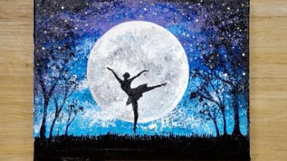
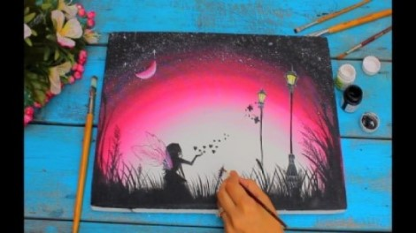
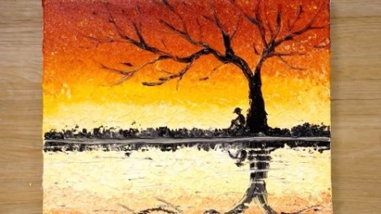
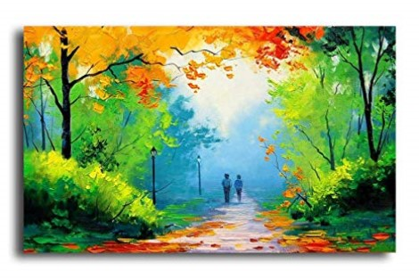
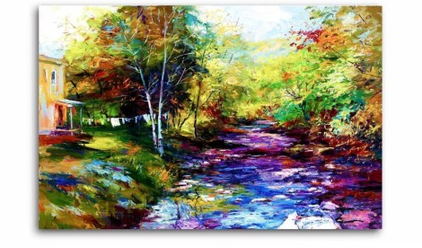

My Intrests are in :
- Painting
- Sketching
- Crafting
- Music
- Travelling
Click on the sections of particular interests listed in the header to know more.
OR
| Interests | Links |
|---|---|
| Painting | Painting Introduction |
| Sketching | Sketching Introduction |
| Music | Popular Music |
| Travel | Best Travel Places |
Painting
    Sketching
A sketch is a rapidly executed freehand drawing that is not usually intended as a finished work.A sketch may serve a number of purposes: it might record something that the artist sees, it might record or develop an idea for later use or it might be used as a quick way of graphically demonstrating an image, idea or principle.
Sketches can be made in any drawing medium. The term is most often applied to graphic work executed in a dry medium such as silverpoint, graphite, pencil, charcoal or pastel. It may also apply to drawings executed in pen and ink, digital input such as a digital pen, ballpoint pen, marker pen, water colour and oil paint. The latter two are generally referred to as "water colour sketches" and "oil sketches". A sculptor might model three-dimensional sketches in clay, plasticine or wax.
For more...Click Here
Music
Here are some of my favourite songs
- Marshmello - Alone
- All We Know
- Chainsmokers - Closer
- Something Just Like This
- Love Me Like You Do
Travelling
Fill in the colors by Visiting these places
5. Palawan Island, Philippines
4. London, England
3. Paris, France
2. U.S. Virgin Islands
1. Iguazu Falls, Argentina/Brazil border